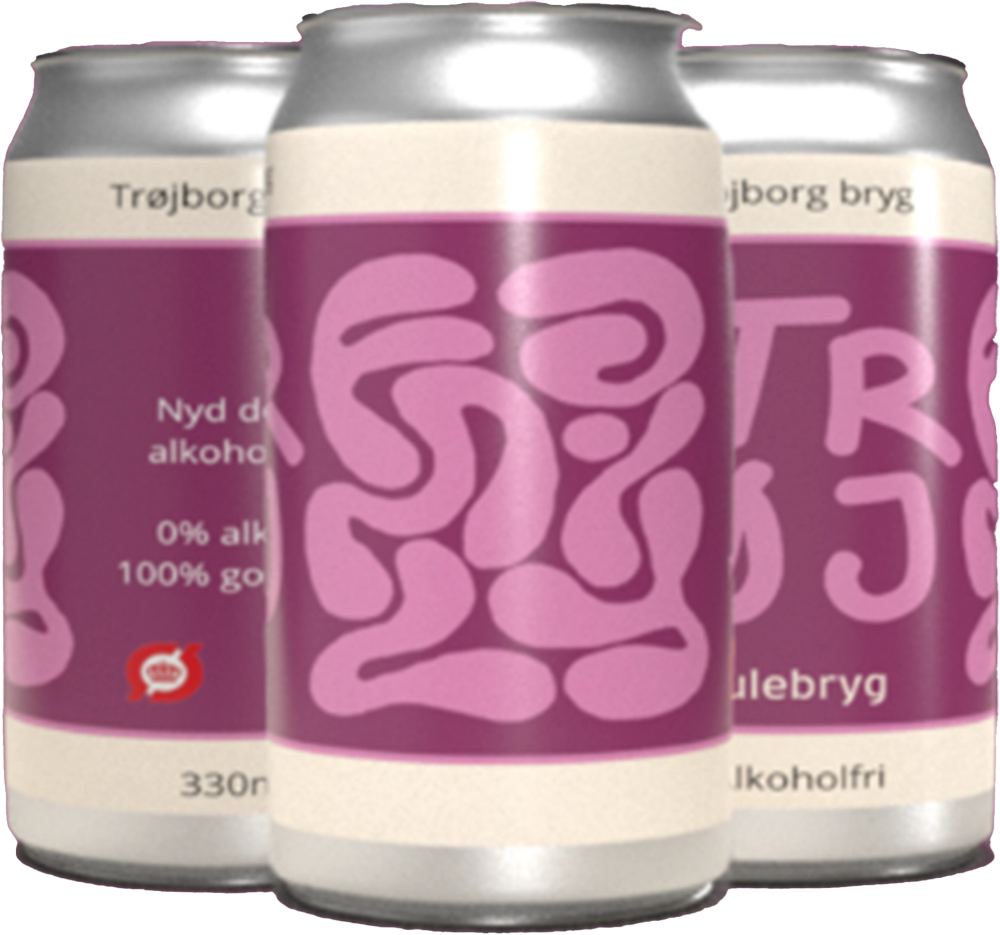
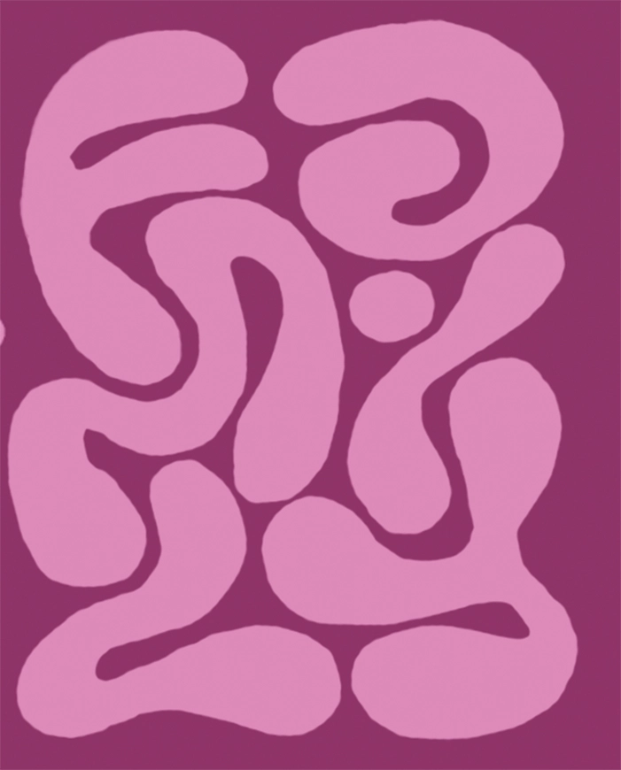

I år har vi for første gang forsøgt os med at brygge en julebryg. En julebryg uden alkohol, der kan nydes til alle julens anledninger.
JULEBRYG

Giv dine julemåneder en forfriskende og festlig drejning med vores alkoholfrie julebryg, med smag af saftige kirsbær! Denne særlige bryg er skabt til julehygge uden alkoholens indvirkning.
I denne øl kan du straks fornemme kirsebærets sødme og friskhed. Kirsebærets smag er blandet med lette kryderier, der indfanger den varme og hyggelige stemnning.
Denne alkoholfrie julebryg er ikke blot en forfriskende alternativ til traditionelle juledrikke, men også en mulighed for at dele den festlige ånd med alle, uanset alkoholpræferencer.
